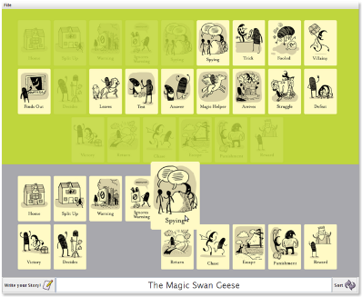

StoryMaps is a free story planning and writing application for children that works on Microsoft Windows, Mac OS X or Linux. I created StoryMaps for my PhD, and worked with teachers, children, creative writing experts and an illustrator to design and evaluate it.
Click on the button to launch StoryMaps with Java Web Start:

(Requires Java version 1.6 or later and a screen resolution of at least 1024x768 pixels.)
Alternatively, download this ZIP file,
extract the contents then double-click on the StoryMaps.jar
file to run StoryMaps.
StoryMaps is free software, you can share it with others and distribute it. Browse the StoryMaps source code on GitHub.
StoryMaps was created by seanh with illustrations by Ray Yuen.
You can read more about StoryMaps, the ideas behind it and how it was developed and evaluated with teachers and children in these publications:
This short video introduces StoryMaps and shows you how to use it.
StoryMaps breaks down the elements of traditional fairy tales into building blocks which children can use to invent new stories. With StoryMaps children can create stories that contain their own original ideas while being structurally complete and well-formed. I hope that StoryMaps will give children a powerful mental model for understanding stories and their construction. School trials of StoryMaps found that through using the application children were able to grasp abstract narrative concepts and apply them to their own writing, and that the experience improved the narrative structure of children's stories.
The planning view is the opening screen of StoryMaps. You are presented with a collection of story cards to choose from in the green area at the top. You can inspect each card more closely by moving the mouse cursor over a card to see it in more detail. You drag-and-drop the story cards that you want to use and arrange them into a story map in the grey area below. You can enter a title for your story in the toolbar at the bottom of the window.
The story cards are based on plot functions from Vladimir Propp's study of traditional Russian fairy tales, Morphology of the Folktale. They were illustrated by designer and illustrator Raymond Yuen.
Move the mouse pointer over a story card to see it in more detail, and open the story editor to see even more detail about the story cards.
Clicking on the Write your Story! button brings up the story editor. With your story map in view above, you use the text editor below to enter the text for your story. You have to fill in a part of your story for each story card in your story map. If you change your mind about one of the cards in your story map, you can go back to the planning view at any time by clicking the Go back to planning button.
You can save your story map to file and open a saved story map to continue working on it later.
When you've finished writing you can preview your story and export it to HTML, or print it.
Forgot to press save? StoryMaps automatically saves your story as you work on it. You'll find automatically saved stories in the StoryMaps folder in your home directory (on Linux) or in your My Documents folder (on Windows). You can open automatically saved stories using the Open a Saved Story button in the File menu in the StoryMaps window.